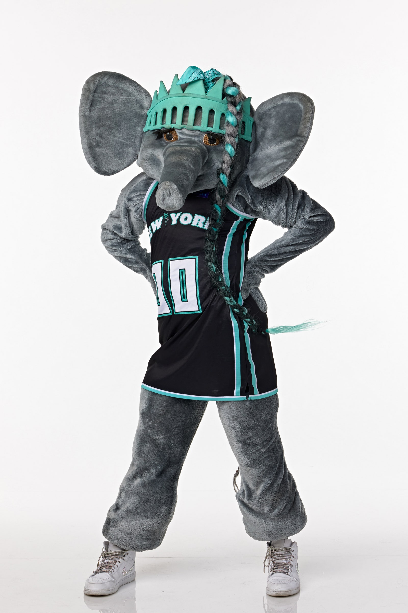

New York City Trivia Quiz
How well do you know the city?
What is the largest borough in New York City?
a. Bronx
b. Brooklyn
c. Manhattan
d. Queens
e. Staten Island
Which fruit is associated with New York City?
a. apple
b. banana
c. cantaloupe
d. date
e. fig
What is the name of this New York Liberty mascot?

a. Billy Buffalo
b. Ellie the Elephant
c. Hudson Knickerbocker
d. Mr. Met
e. Sly the Silver Fox
What is a famous skyscraper in New York City?
a. Burj Khalifa
b. Empire State Building
c. Princess Tower
d. Shanghai Tower
e. Willis Tower
Submit